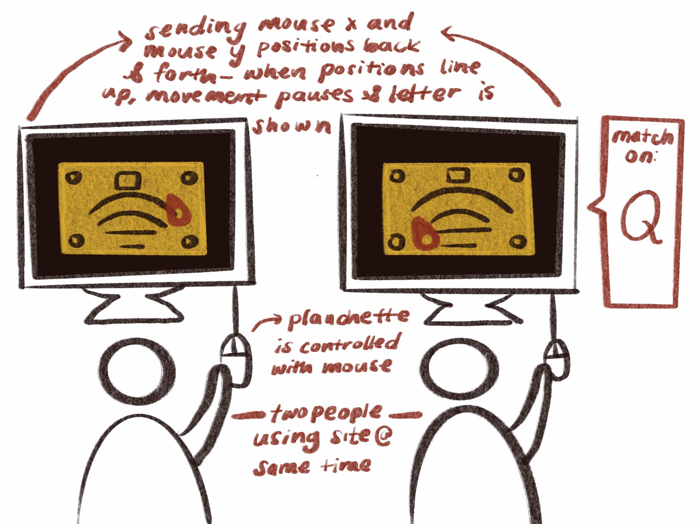

bailey foltz
bailey foltzonline ouija board
an electronic ouija board created to modernize spiritual communication
site created using p5.js
[ 2022 ]
background :
This site was created as a final assignment for an Electronic Rituals, Oracles, and Fortune Telling class in 2022. This project was a continuation of an assignment I had done for the same class, for which the prompt was to make a prototype of an electronic spirit board or other method for facilitating automatic writing (communication from unconscious/subconscious/collective gesture.)
I was interested in this concept of an electronic spirit board because while it was not traditional, it also didn’t seem contradictory to the idea of what made the spirit board work in the first place - specifically an ouija board. If there was an entity affecting the results, what was it affecting? The board? The planchette? The collective subconsciousness of its users, causing them to guide the planchette where this entity wanted?
For each of these questions, I wanted to consider how the spirit could still theoretically extend its powers through a digital space - affecting the screen, the mouse, or the subconscious of the users.
audience :
This experience is intended for two people on separate devices.
• While reading about ouija board use I learned that it was intended to be controlled by only two users at a time. Many times in media I see the board being used by larger groups of people, or even one solitary person, and I was surprised to learn that it was originally intended to be a two person activity. I wanted to maintain this rule for my ouija board.
• This site gives a different and possibly updated perspective to the concept of a spirit board, but also allows people to participate in the activity without the necessity of physical proximity.
process :
I began by planning out how the board could translate onto a digital space.
I wanted to make a board where the “planchette” was controlled by one’s mouse, and just as the reading from a planchette on a physical board would be determined by the joint influence of two users, the results of this board would also be determined by the joint influence of two users. Letters would be ‘read’ when the points at which their mouse locations on the board line up, or more conceptually, the points at which their subconscious line up. When the two users both happen to have their mouse in the same location at the same time, that is when a “match” is produced - and if that location happens to be over a letter or other character, that is the message the entity in charge of the ouija board may be trying to send.
I then began to think about the visual of the ouija board - since my digital ouija board was already diverging from tradition, I wanted to maintain some aspects of the traditional ouija visuals, and I adjusted the design of an ouija board slightly to match my digital concept.
• I made the planchette into more of a mouse pointer shape.
• I had the characters on the board match the alignment of a computer keyboard.
My first prototype and original assignment submission was a p5.js file which was able to give an idea of what the board’s movement was supposed to look like, tracking the mouse location and having the planchette follow. After this, my next step was to establish the connection of two “boards” - I needed two different devices to connect and send their information (that information being mouse location) back and forth. For the parameters of this assignment, I established a local connection, so the site that hosts the ouija board would be launched through one’s ip address and connection would be possible through two devices on the same wifi network. This also allows me to easily limit the site to two people at a time, since only I would be launching the site. If an entity does control the ouija board, this also might help with any issue relating to proximity and the difficulties it might pose for them to control two devices far away from each other.
I was able to test my initial program as a “match test” to see how often the mouse locations on two devices controlled by two different people would “match”. The people who tried this version of my program had no trouble understanding what they were supposed to do, but with the program set up as it was, it took about two minutes for the two devices to get a “match”. I did not want a match to necessarily take that long, so I made sure that I adjusted the program slightly so that length of time may be shortened. I made the proximity range that determined a match slightly larger and I slowed down the movement of the planchette slightly. There were other aspects which I had already planned on incorporating into my more final version which also increase likelihood of a match - such as adding a delay to the movement of the planchette following the pointer, and including the image of the board itself, which gives both context of what is trying to be achieved and more specific locations to aim for.
In the current version of the ouija board shown here, two users in the same or separate rooms are expected to pose a question to an entity and then begin to use the digital board, tracking the letters the board gives them along the way in order to see the entity’s answer (or lack of).